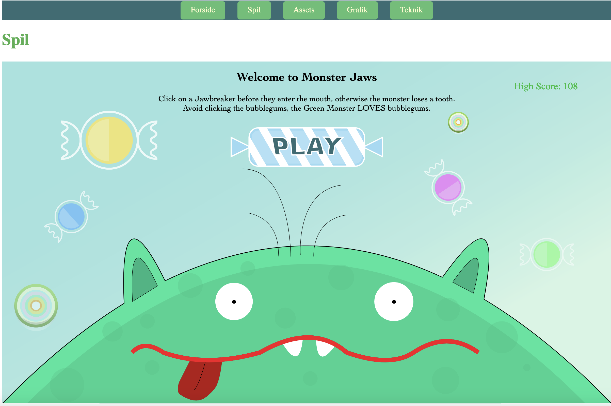

Portfolio
Projects from my 1st semester in Multimedia Design.
My Work
Project 1: Multimedia Production
First multimedia production project
In this project, our team aimed to get to know each other
better while working on our first multimedia production. The
process was guided and facilitated through our course sessions
over the week.
We started with a shared theme, which in our case was that
we're all raised out in the country and not in the city. Our
video was then a comedic sketch where we walked into a store
and the prices were sky-high. The video was approximately 1
minute long.
This project was an excellent opportunity to collaborate,
brainstorm, and execute a multimedia project from concept to
completion.
Project 2: Grundlæggende Web
Studiestartsprøve
Objective
The goal of this project was to create a fully functional mobile-first website and then extend it to a desktop version. This exercise was designed to teach us the principles of responsive web design, HTML structuring, CSS styling, and overall web development best practices.
Process
For the site, we were given specific instructions and materials. The main tasks included setting up the HTML structure, applying CSS styling with two fonts and a color scheme, implementing a basic navigation menu, optimizing images, and ensuring all HTML pages validated without errors.
After completing the mobile site, I extended it to a desktop version. This involved using CSS grid, flexbox, and media queries for responsive design, following layout diagrams, and organizing CSS into separate files for styling and layout.
Challenges and Solutions
The main challenge was ensuring the site was fully responsive and visually appealing across all devices. Also changing the layout from mobile to desktop accordingly.
Conclusion
This project provided a comprehensive learning experience in web development, from creating a mobile-first design to extending it to a desktop version. It solidified my understanding of responsive design principles, HTML and CSS coding practices, and the importance of adhering to project specifications.
Project 3: Grundlæggende UX/UI
Creating a web shop for my own firm

Objective
The goal was to design and develop a functional website for my firm, Djurhuus Scandinavia, selling watches. The theme focused on fundamental UX/UI principles, including user research, interaction design, and usability testing, with a significant use of Figma.
Research and Idea
I chose the theme of a watch web shop, leveraging my interest and knowledge. Tasks included identifying the site's purpose, conducting research, creating a moodboard and documenting everything in Figma. I also chose the style of minimalism for the site.
Digital Prototype
I created a clickable prototype in Figma, conducting visual research, selecting a style, and documenting these choices. On this prototype I did the tænke-højt test and a 5 - second test. From this feedback, I changed the nav menu, which was a bit unclear.
Coded Site
I developed the prototype into a coded site using HTML, CSS, and JavaScript. This included structuring the site, ensuring responsiveness, implementing web fonts and a favicon, and testing the site using Lighthouse.
Challenges and Solutions
Ensuring responsiveness and visual appeal across devices was a challenge, addressed with CSS grid, flexbox, and media queries. User testing improved navigation, and JavaScript was used for dynamic features like a drop-down menu, "add to cart" button, and quantity-based price updates.
What I Learned: Advanced JavaScript techniques and the importance of user feedback.
Documentation
I maintained thorough documentation in Figma and FigJam, logged daily progress, and compiled a final report detailing the project from research to implementation.
Conclusion
This project provided a comprehensive understanding of the web development lifecycle, enhancing my skills in UX/UI design, coding, and documentation.
Link to my prototype documentation
Project 4: Grundlæggende Animation
Basic web animation using CSS and JavaScript
Objective
Developed an interactive game, Monster Jaws, to introduce JavaScript and CSS animations. The aim was to create an engaging user experience while showcasing fundamental programming concepts.
Research and Idea
The project began with the idea of creating a simple yet engaging web game to demonstrate basic animation and interaction principles. I used an Idea-Generating technique, and I researched various game mechanics and settled on a concept that involves feeding a monster bubblegum and avoiding jawbreakers. I also created an activity-diagram using draw.io. This gave me a clear idea of how the game would work.
Design and Development
Designed game elements with Adobe Illustrator. The graphics were then exported as SVG files to be used in the game. I then implemented game mechanics using HTML, CSS, and JavaScript.
Utilized CSS animations and JavaScript event handling for dynamic user interaction.
Challenges and Solutions
Adjusting the game mechanics, such as the speed of falling objects and scoring system.
Technical Implementation
Executed game logic using HTML, CSS, and JavaScript, while creating assets with Adobe Illustrator.
Gained practical knowledge in web game development.
Documentation
Throughout the project, I maintained detailed documentation of the design and development process. This included keeping a log of daily progress.
Conclusion
This project provided a comprehensive experience in developing an interactive web game. It enhanced my skills in JavaScript, CSS animations, and game design.
Project 5.1: Passionsite
Showcasing a persons passion

Objective
The goal of this project was to produce content and develop a simple site about a person with a passion. This project focused on planning, shooting, and editing videos and interviews, as well as integrating various media types into a responsive website.
My Role and Responsibilities
The project involved both teamwork and independent tasks. Together with a partner, we found and filmed Doudou aka Sh3de, a rapper/producer from Bispebjerg. We planned and captured video interview, then independently edited the video using Adobe Premiere Pro.
Challenges and Solutions
One major challenge was coordinating filming schedules and ensuring content quality. Effective planning, communication, and use of professional tools were essential to overcome these challenges. This project taught me the importance of planning and problem-solving in multimedia projects.
Conclusion
This project enhanced my skills in video production, editing, and web development, providing a comprehensive learning experience in creating and presenting multimedia content.
Project 5.2: Virksomhedssite
Redesigning a company's website from scratch

Objective
The goal of this project was to redesign and develop a new website for Crack Planet. This involved planning, researching, and coding a fully functional site while producing content such as text, photos, LottieFiles, and videos. The project emphasized improving the user experience and fixing issues identified in the original site.
My Role and Responsibilities
As part of the group, we contacted the owner of Crack Planet, who just so happened to be in our group, and collaborated closely throughout the project. My responsibilities included testing the existing site, identifying areas for improvement, creating a digital prototype, and redesigning and coding the new site using HTML, CSS, and JavaScript.
Research and Redesign
We began by thoroughly testing the existing website to find errors and areas for improvement. Based on our findings, we developed a redesign plan to enhance the user experience. This phase involved desktop research and tests like BERT and the 5-second test. I created wireframes, documentation, and a digital prototype in Figma to guide the development process.
Content Production
We produced various types of content for the new site, including text, photos, and animated vector graphics using LottieFiles. Additionally, we created an interview with the owner to add more user connection. This phase helped us refine our skills in content creation and multimedia integration.
Website Development
I played a significant role in coding the redesigned website from scratch, utilizing HTML, CSS, and JavaScript. This included extensive work on features like the search bar. We conducted thorough testing to validate the site's functionality and performance.
Challenges and Solutions
A major challenge was the lack of communication within our group of four, leading to uneven task distribution. To address this, I took the initiative to create wireframes, documentation, and a digital prototype in Figma, and to code the website, ensuring the project stayed on track. This experience highlighted the importance of effective communication and collaboration in team projects. Another challenge was setting the presentation up in pecha kucha. Only have 20 second per slide was something that requires practise.
Conclusion
This project provided valuable experience in website redesign and development, enhancing my skills in project planning, research, content production, and coding. It demonstrated the importance of effective collaboration in creating a successful website.
Links to my documentation and prototype